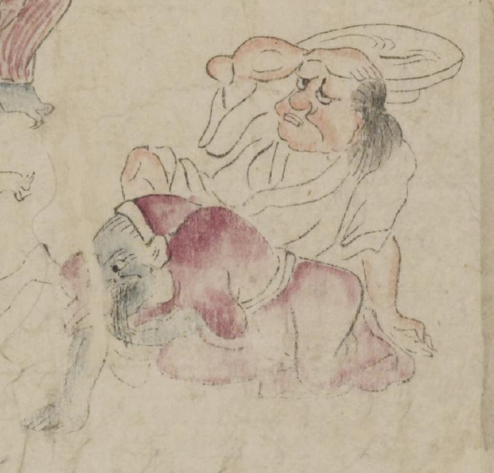

青い肌の鬼。紫色の着物と頭巾のようなものを着けている。右手を床につけて蹲り、左手を口元にやり、何かを吐いているように見える。
著作者：坂本弥一郎徳定／出典：親書誌：U426_nichibunken_0080：伊吹山酒呑童子絵巻；イブキヤマシュテンドウジエマキ／日付：2007／資源識別子：U426_nichibunken_0080_0007_0006
Copyright (c)2010- International Research Center for Japanese Studies, Kyoto, Japan. All rights reserved.